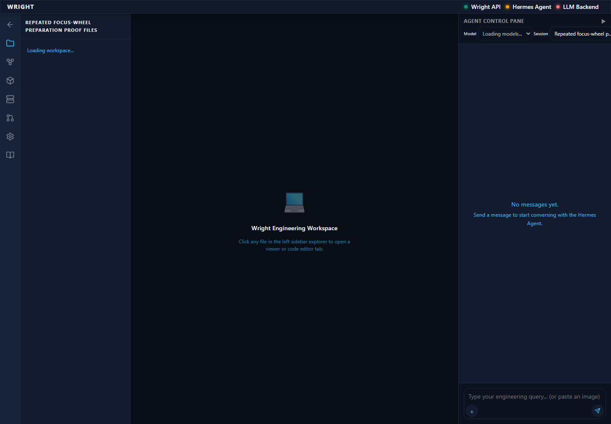
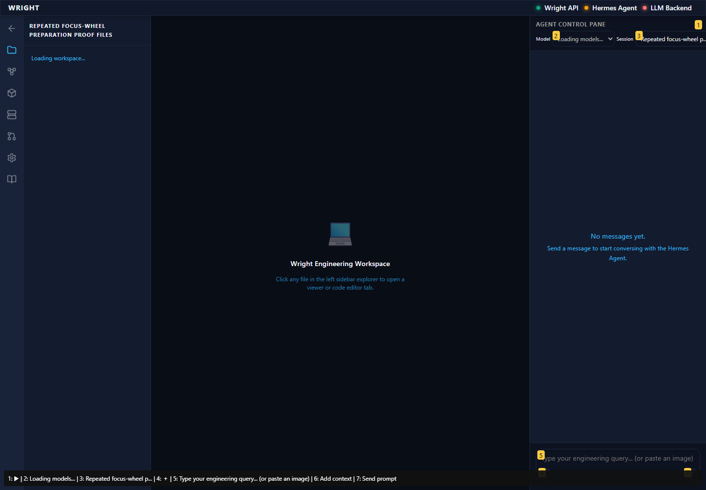

Normal Wright workspace and actual isolated engineering run. No mocked routes or physical action.
Status: blocked
Continue the retained walkthrough at its first unverified assessment.
Expected: Normal workspace available.
Actual: The existing workspace opens.
raw 
annotated 
The response-body observer terminated when the interface frame navigated away. The browser stopped before a stopping screenshot or finalized trace could be captured. No engineering run or review was executed; fresh011 verifies the real assessment separately.
No stopping screenshot is available. The original workspace screenshot and script are preserved.